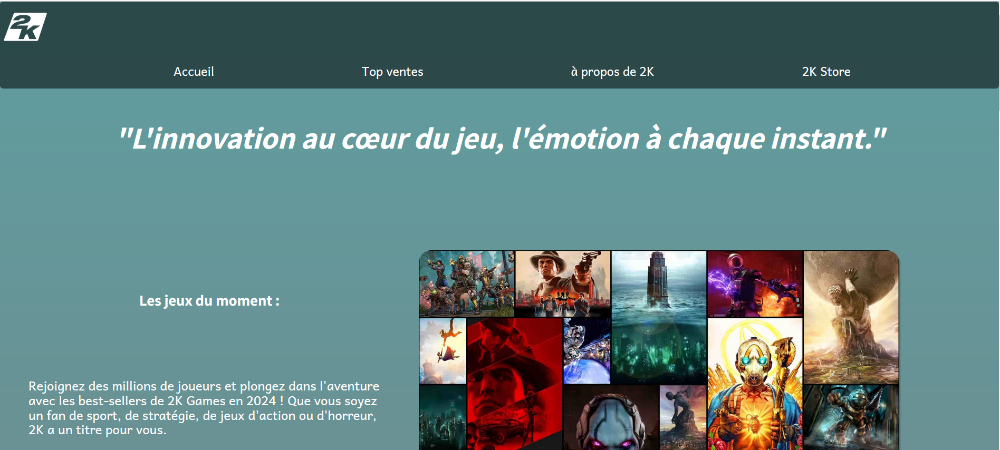

Mes projets
Voici mes différents projets:

Sitre vitrine pour 2K Games
Représente les meilleures ventes de l'entreprise 2k games
tout en donnant des informations complémentaires sur le studio.
Prochainement...
Prochainement...